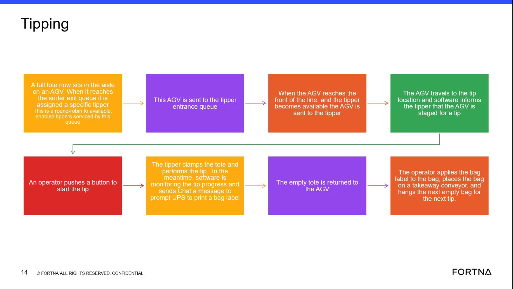
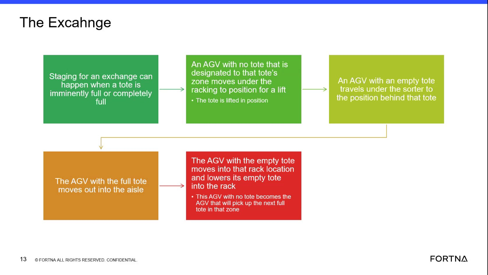

| Procedure ID | proc_diagnose_agv_exchange_backfill_gap_v1 |
|---|---|
| Title | Diagnose AGV exchange/backfill gap when an AGV moves out without a replacement |
| Procedure Type | diagnostic |
| Primary Role | L2_support |
| Support Safe | Yes |
| Capability Tags | agv_active_errors, fleet_system_status |
| Access Surface | rms_ui, wcs_sql |
| Audience Roles | L2_support |
| Failure Pattern Tags | agv_tracking_or_path_lost, zone_agv_mismatch |
| Validation Status | needs_sme_review |
| Merge Status | source_finalized |
Diagnose why a front AGV moved out without a replacement/backfill by checking (1) whether the trailing AGV had a fault (including the case where it was reported ready for a new task and faulted at the same time) and (2) whether chute closure/fullness and exchange timing targets indicate exchanges were not completed before chute closure.
Use when you observe or are told that an AGV moved out without another AGV backfilling/replacing it during an exchange, and you need live evidence to confirm whether the trailing AGV fault/ready+fault timing and/or chute fullness/closure and exchange timing targets contributed.


Responsible role: L2_support
Instruction:
Using the RMS / fleet status UI (rms_ui), locate the AGV pair involved in the exchange event: the AGV that moved out (front) and the AGV that should have backfilled (trailing).
Expected result:
You have identified the specific trailing AGV associated with the exchange event time window (so you can check whether it faulted when the front AGV moved out).
Stop or Escalate If:
Responsible role: L2_support
Instruction:
In RMS / fleet status UI (rms_ui), check the trailing (behind) AGV’s status/error indicators around the time the front AGV moved out. Confirm whether the trailing AGV is faulted, or shows a fault coincident with being reported ready for a new task.
Expected result:
You find live evidence that the trailing AGV had an active fault at (or coincident with) the time the front AGV moved out, consistent with the described pairing/backfill failure mechanism.
Stop or Escalate If:
Responsible role: L2_support
Instruction:
Using WCS / Helix DB (SSMS) (wcs_sql), query the OptiSweep DB for the same time window to find evidence of a fault/backfill failure for the trailing AGV (e.g., AGV state/error records).
Expected result:
You identify live database evidence that the trailing AGV faulted (or otherwise failed to support backfill) during the exchange window corresponding to the front AGV move-out.
Stop or Escalate If:
Responsible role: L2_support
Instruction:
Using WCS / Helix DB (SSMS) (wcs_sql), review live system data available for chute fullness and exchange timing metrics around the event time window. Look for conditions consistent with chute closure when the chute is full and exchange not completing before the 80% threshold (with exchange timing deviating from the median ~8 seconds and floor ~6.7 seconds).
Expected result:
You find live evidence that chute fullness/closure occurred (or was imminent) such that exchanges were not completed before the 80% threshold, and/or exchange timing deviated from the described targets (median ~8s, floor ~6.7s).
Stop or Escalate If:
Responsible role: L2_support
Instruction:
Based on your findings from RMS and WCS/Helix DB, decide whether to escalate. Escalate when you confirm the trailing AGV fault/ready+fault timing mechanism or confirm chute fullness/insufficient exchange timing mechanism, or when you cannot confirm either mechanism with live evidence.
Expected result:
A clear diagnostic conclusion is produced: (1) trailing AGV fault/ready+fault timing explains the missing backfill, and/or (2) chute fullness/closure and exchange timing targets indicate exchanges were not completed before 80%. If neither is supported by live evidence, escalation occurs due to unconfirmed cause.
Stop or Escalate If: